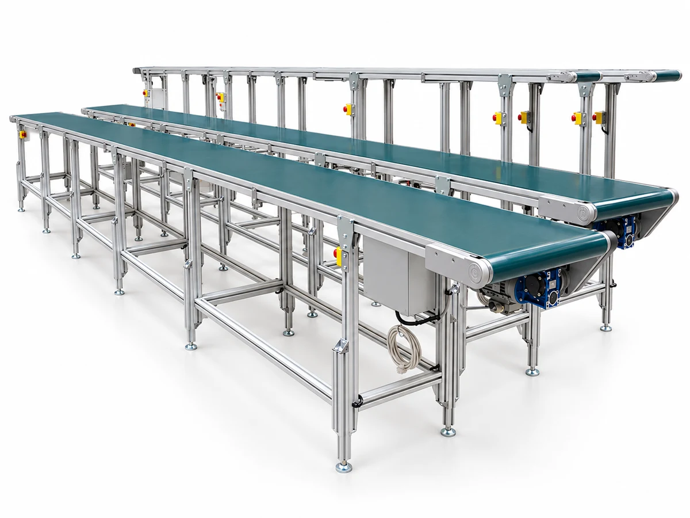
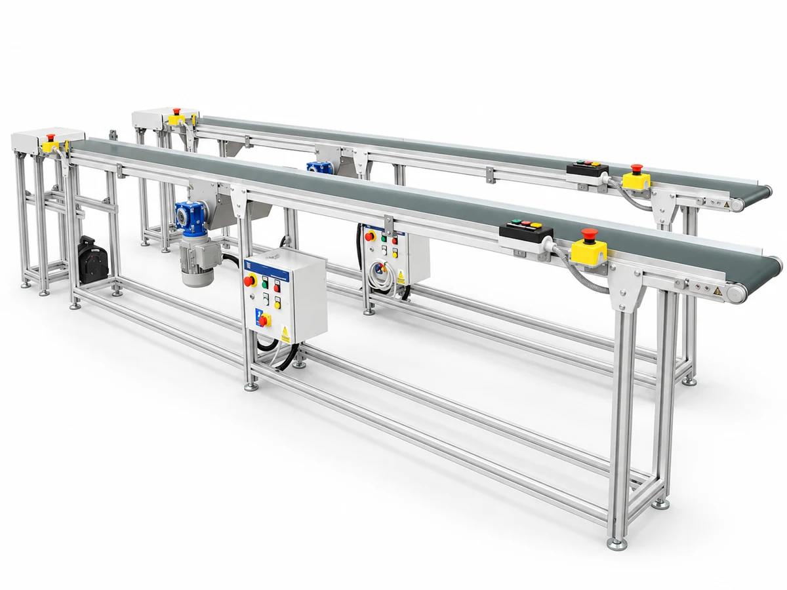
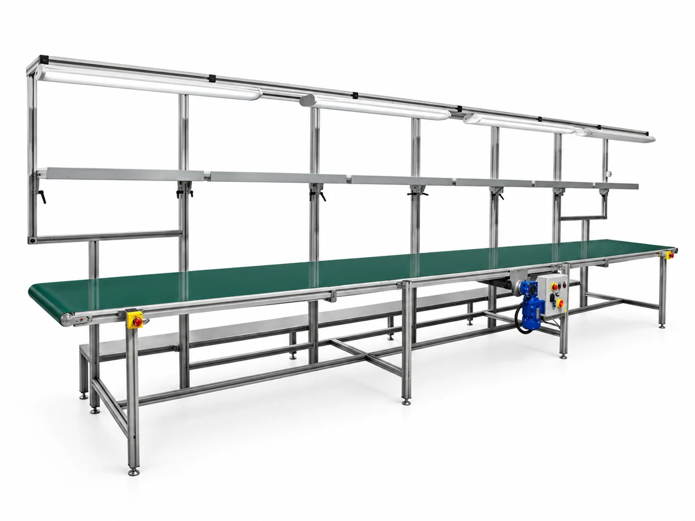
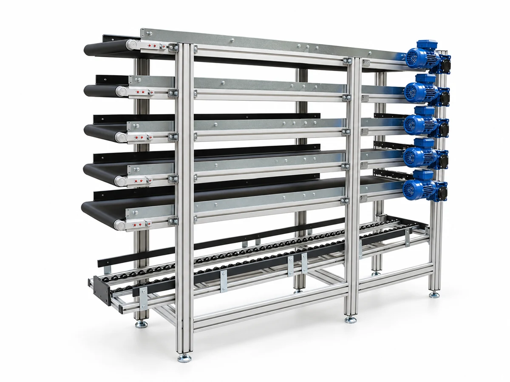
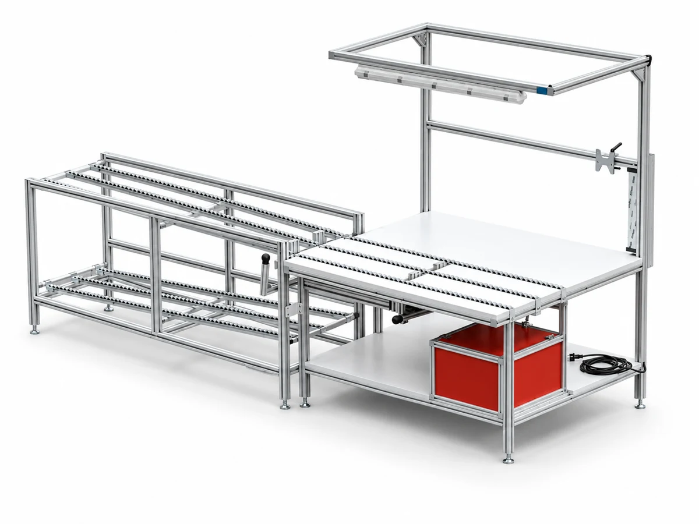

Automated Assembly Line
Conveyor line with safety guarding and operator stations for automated assembly.
View configurationProducts / Material flow · Assembly
Conveyor and assembly layouts that move parts through your production process.
Discuss your application
Explore the range
Conveyor line with safety guarding and operator stations for automated assembly.
View configuration
Belt conveyor with an incline section for lifting parts between levels.
View configuration
Inclined belt conveyor on castors, easy to reposition across the shop floor.
View configuration
Flat belt conveyor on castors for flexible line layouts.
View configuration
Two parallel lanes with a dedicated control panel for independent product flow.
View configuration
Dual-lane conveyor with emergency-stop stations along the line for operator safety.
View configuration
Belt conveyor with an overhead lighting frame for well-lit inspection and assembly.
View configuration
Multi-level conveyor arrangement with a motor rack, saving floor space.
View configuration
Workstation fed directly by a conveyor infeed to keep parts moving to the operator.
View configurationPlan the right fit
What are the size, weight and handling needs of each part?
Where does the conveyor start, finish and change level?
How should it connect to upstream and downstream equipment?
Useful to shareA floor layout, part sizes and weights, and the required production sequence.
Prepare your briefRelated capability
Let’s make it work